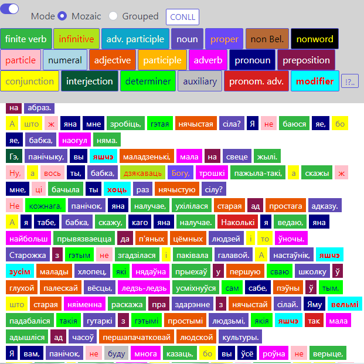

Elemental
Jan–Feb 2018, Feb–May 2020, Nov–Dec 2021, 2022
NodeJS
Express.js
VueJS
PostgreSQL
NaiveUI

WIP. Corpus Annotation Tool. The idea behind it was to made UI that allows to tag maximum of tokens with minimum of clicks. It still lacks interface to load text data into the database (by now, it is implemented via script). So it is not a ready-to-use app. However, I fully annotated with it a text of 10k tokens and the text commenting project uses it now. The prototype was written in JQuery and SQLite and now the app is being rewritten into Vue3 and PostgreSQL.